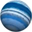
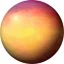
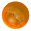
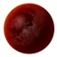
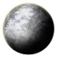
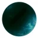
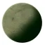
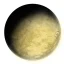

Экономический совет
Предназначение Экономического Совета – Соединение в рамках Общего дела специалистов в области экономики, финансов и управления с целью разработки, и…
Будущее не определено — будущее определяет!
Советы РКО, объединяющие специалистов по ключевым направлениям развития.
Предназначение Экономического Совета – Соединение в рамках Общего дела специалистов в области экономики, финансов и управления с целью разработки, и…

Совет Чести и Права создан с целью формирования природосообразной, жизнеродной, ценностно-ориентированной правовой среды для гармоничной жизни и…
Деятельность совета направлена на формирование условий для развития медицины здоровья, основанной на получении навыков мониторинга и развития…
Деятельность Совета по развитию космических инициатив: нацелена на продвижение созидательных инициатив людей, идущих по пути своего предназначения и…
Деятельность Совета направлена на создание общества сбалансированного устойчивого развития, высокой культуры, разумного хозяйствования, а также…

Деятельность Совета направлена на создание среды для развития и роста мощности человека, общества, государства и Жизни в целом посредством Культуры,…
Деятельность Совета направлена на формирование в обществе культуры трезвой, здоровой жизни, где спорт и физическое развитие тела являются такой же…
Деятельность Совета нацелена на формирование в обществе культуры «Человека – Творца», способного и реализующего свою способность к творчеству во имя…
Деятельность Совета нацелена на всестороннее изучение, исследование и развитие Арктической зоны России. Арктика – это особый регион Земли,…

Деятельность совета нацелена на изучение, разработку и внедрение комплексных программ воспитания и образования, согласованных с естественно-научными,…
Деятельность Совета нацелена на вовлечение молодёжи России и других стран к созиданию себя и мира вокруг, к труду и творчество во имя сохранения…

Деятельность Совета направлена на создание условий для достижения целей Русского Космического Общества.

Деятельность Совета нацелена на создание условий и систем жизнеобеспечения в нашей в нашей стране, и в мире в целом, для рождения Космического…
Деятельность Совета нацелена на использование базового принципа LT-технологий, сведение результатов в базу данных по существующим технологиям…

Деятельность Совета нацелена на оценку рисков, влияющих на деятельность Общества, проведение оценки результатов деятельности Общества.

Деятельность Совета нацелена на создание сети международных и региональных отделений РКО.
Деятельность Совета нацелена на консолидацию в Организации людей, которые стали первыми в различных областях науки, культуры, техники, ремесла,…
Деятельность Совета нацелена на разработку и реализацию прорывных проектов, в различных областях жизни и деятельности. На привлечение к деятельности…

Деятельность Совета нацелена на содействие работе Русского Космического Общества, в части формирования материально-технической базы, ресурсного и…